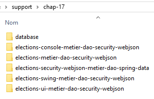
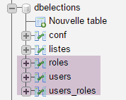
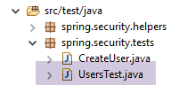
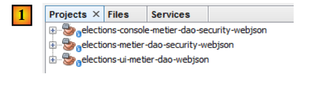
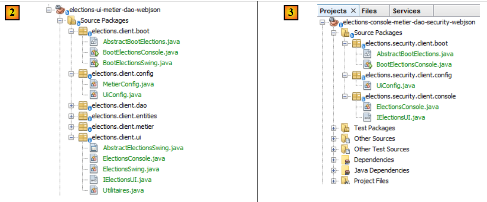
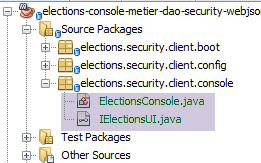
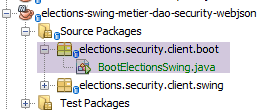
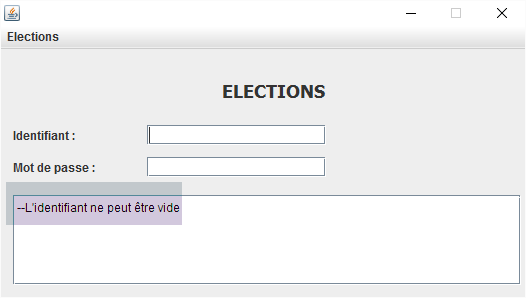
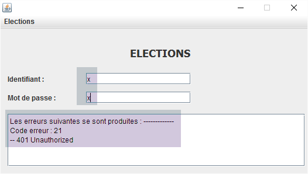

17. [TD]：Web 服务器的安全防护 / jSON 选举
关键词：多层架构、Spring、依赖注入、Web服务 / jSON 安全化、客户端 / 服务器
现在我们将上一章所学内容应用到选举相关的 TD 中。架构如下：
 |
流程将按以下方式进行：
- 编写服务器端；
- 编写客户端（不包含 [ui] 层，但需对 [métier] 层进行 JUnit 测试）；
- 使用 [ui] 层进行客户端写入；
17.1. Support
 |  |
本章的项目位于文件夹 [support / chap-17] 中。脚本 SQL 用于生成测试所需的数据库。
17.2. 数据库
安全服务器的数据库现在应包含表 [USERS]、[ROLES] 和 [USERS_ROLES]：
 |  |
数据库生成脚本 SQL 可在文档支持中获取。
17.3. 安全服务器
要部署选举安全服务器，只需复制粘贴示例项目 [intro-spring-security-server-01]：
 |
待办事项：按 [1] 中的示例重命名包。
完成此操作后，我们按以下方式修改文件 [pom.xml]：
<project xmlns="http://maven.apache.org/POM/4.0.0" xmlns:xsi="http://www.w3.org/2001/XMLSchema-instance"
xsi:schemaLocation="http://maven.apache.org/POM/4.0.0 http://maven.apache.org/xsd/maven-4.0.0.xsd">
<modelVersion>4.0.0</modelVersion>
<groupId>istia.st.elections</groupId>
<artifactId>elections-security-webjson-metier-dao-spring-data</artifactId>
<version>0.0.1-SNAPSHOT</version>
<name>elections-security-webjson-metier-dao-spring-data</name>
<description>elections spring security</description>
<properties>
<project.build.sourceEncoding>UTF-8</project.build.sourceEncoding>
<java.version>1.8</java.version>
</properties>
<parent>
<groupId>org.springframework.boot</groupId>
<artifactId>spring-boot-starter-parent</artifactId>
<version>1.2.7.RELEASE</version>
</parent>
<dependencies>
<dependency>
<groupId>istia.st.elections</groupId>
<artifactId>elections-webjson-metier-dao-spring-data</artifactId>
<version>0.0.1-SNAPSHOT</version>
</dependency>
<!-- Spring Security -->
...
</dependencies>
<!-- 插件 -->
<build>
...
</build>
</project>
- 在第23-27行，将对项目[intro-server-webjson-01]的依赖替换为第12节中讨论的项目[elections-webjson-metier-dao-spring-data]；
- 在第 4-7 行，填写新项目的属性；
接下来我们需要修改该项目的配置类：
[DaoConfig]
package elections.security.config;
import org.springframework.context.annotation.Bean;
import org.springframework.context.annotation.ComponentScan;
import org.springframework.context.annotation.Import;
import org.springframework.data.jpa.repository.config.EnableJpaRepositories;
@EnableJpaRepositories(basePackages = { "elections.security.repositories" })
@ComponentScan(basePackages = { "elections.security.dao" })
@Import({ elections.dao.config.DaoConfig.class })
public class DaoConfig {
// 常量
final static private String[] ENTITIES_PACKAGES = { "elections.dao.entities", "elections.security.entities" };
@Bean
public String[] packagesToScan() {
return ENTITIES_PACKAGES;
}
}
修改内容位于以下行：
- 第 8、9、14 行：填写正确的包名；
- 第 10 行：导入的类现在是来自项目 [elections-webjson-metier-dao-spring-data] 的 [elections.dao.config.DaoConfig]；
注意：如前所述，此配置仅在类 [elections.dao.config.DaoConfig] 带有注解 [@Configuration] 时才有效。请确认这一点。
[SecurityConfig]
package elections.security.config;
...
@EnableWebSecurity
@ComponentScan(basePackages = { "elections.security.service" })
@Import({ WebConfig.class, DaoConfig.class })
public class SecurityConfig extends WebSecurityConfigurerAdapter {
...
}
修改内容如下：
- 第 6 行：更改包名；
就这样。请通过运行测试 JUnit [] 进行初步测试：
 |
运行启动类 [Boot]，然后使用 Chrome 扩展 [Advanced Rest Client] 进行以下测试：
 |
在 [1] 中，请求。在 [3] 中，响应。 在 [2] 中，HTTP 是用户 [admin, admin] 的身份验证头：Authorization:Basic YWRtaW46YWRtaW4=
现在请查看竞争中的列表：
 |
17.4. 不带 [ui] 层的安全服务器客户端
 |
将项目 [elections-ui-metier-dao-webjson] 复制并粘贴到项目 [elections-metier-dao-security-webjson] 中。
 |
待完成工作：在 [1] 中，如有必要请重命名包，并删除 [ui] 层中的包以及 [boot] 启动类。
接下来我们将按照第 16.5 节中的方法进行操作。
17.4.1. Maven 配置
仅项目标识部分发生变更：
<project xmlns="http://maven.apache.org/POM/4.0.0" xmlns:xsi="http://www.w3.org/2001/XMLSchema-instance"
xsi:schemaLocation="http://maven.apache.org/POM/4.0.0 http://maven.apache.org/xsd/maven-4.0.0.xsd">
<modelVersion>4.0.0</modelVersion>
<groupId>istia.st.elections</groupId>
<artifactId>elections-metier-dao-security-webjson</artifactId>
<version>0.0.1-SNAPSHOT</version>
<description>Client jUnit du serveur web / jSON</description>
<name>elections-metier-dao-security-webjson</name>
...
17.4.2. [métier] 层的重构
 |
接口 [IElectionsMetier] 的变更如下：
package elections.security.client.metier;
import elections.security.client.entities.ListeElectorale;
import elections.security.client.entities.User;
public interface IElectionsMetier {
// 身份验证
public void authenticate(User user);
// 获取候选名单
public ListeElectorale[] getListesElectorales(User user);
// 待填补席位数
public int getNbSiegesAPourvoir(User user);
// 选举门槛
public double getSeuilElectoral(User user);
// 结果登记
public void recordResultats(User user, ListeElectorale[] listesElectorales);
// 席位计算
public ListeElectorale[] calculerSieges(User user, ListeElectorale[] listesElectorales);
}
所有方法的第一个参数均为希望使用安全服务器资源的用户。
[ElectionsMetier] 的实现演变如下：
package elections.security.client.metier;
import java.io.IOException;
import org.springframework.beans.factory.annotation.Autowired;
import org.springframework.context.ApplicationContext;
import org.springframework.stereotype.Component;
import com.fasterxml.jackson.core.type.TypeReference;
import com.fasterxml.jackson.databind.ObjectMapper;
import elections.security.client.dao.IClientDao;
import elections.security.client.entities.ElectionsConfig;
import elections.security.client.entities.ElectionsException;
import elections.security.client.entities.ListeElectorale;
import elections.security.client.entities.User;
@Component
public class ElectionsMetier implements IElectionsMetier {
@Autowired
private IClientDao dao;
@Autowired
private ApplicationContext context;
// 选举配置
private ElectionsConfig electionsConfig;
private ElectionsConfig getElectionsConfig(User user) {
if(electionsConfig!=null){
return electionsConfig;
}
// 映射器jSON
ObjectMapper mapperResponse = context.getBean(ObjectMapper.class);
try {
// 查询
Response<ElectionsConfig> response = mapperResponse.readValue(dao.getResponse(user, "/getElectionsConfig", null),
new TypeReference<Response<ElectionsConfig>>() {
});
// 错误？
if (response.getStatus() != 0) {
// 抛出 1 个异常
throw new ElectionsException(response.getStatus(), response.getMessages());
} else {
electionsConfig = response.getBody();
return electionsConfig;
}
} catch (ElectionsException e1) {
throw e1;
} catch (IOException | RuntimeException e2) {
throw new ElectionsException(100, e2);
}
}
@Override
public ListeElectorale[] getListesElectorales(User user) {
...
}
@Override
public int getNbSiegesAPourvoir(User user) {
return getElectionsConfig(user).getNbSiegesAPourvoir();
}
@Override
public double getSeuilElectoral(User user) {
return getElectionsConfig(user).getSeuilElectoral();
}
@Override
public void recordResultats(User user, ListeElectorale[] listesElectorales) {
...
}
@Override
public ListeElectorale[] calculerSieges(User user, ListeElectorale[] listesElectorales) {
...
}
@Override
public void authenticate(User user) {
dao.getResponse(user, "/authenticate", null);
}
}
待完成任务：补充上述代码。
17.4.3. Spring 配置
 |
类 [MetierConfig] 的变更如下：
package elections.security.client.config;
...
@ComponentScan({ "elections.security.client.dao", "elections.security.client.metier" })
public class MetierConfig {
第 5 行，待探索的包需要更新。
17.4.4. [métier] 层中的测试 JUnit
 |
测试类 [Test01] 的演变如下：
package elections.security.client.metier.junit;
import org.junit.Assert;
import org.junit.BeforeClass;
import org.junit.Test;
import org.junit.runner.RunWith;
import org.springframework.beans.factory.annotation.Autowired;
import org.springframework.boot.test.SpringApplicationConfiguration;
import org.springframework.test.context.junit4.SpringJUnit4ClassRunner;
import com.fasterxml.jackson.core.JsonProcessingException;
import com.fasterxml.jackson.databind.ObjectMapper;
import elections.security.client.config.MetierConfig;
import elections.security.client.entities.ElectionsException;
import elections.security.client.entities.ListeElectorale;
import elections.security.client.entities.User;
import elections.security.client.metier.IElectionsMetier;
@SpringApplicationConfiguration(classes = MetierConfig.class)
@RunWith(SpringJUnit4ClassRunner.class)
public class Test01 {
// 图层 [electionsMetier]
@Autowired
private IElectionsMetier electionsMetier;
// 映射器 jSON
private final ObjectMapper mapper = new ObjectMapper();
// 用户
static private User admin;
static private User user;
static private User unknown;
@BeforeClass
public static void initTest() {
admin = new User("admin", "admin");
user = new User("user", "user");
unknown = new User("x", "y");
}
@Test()
public void checkUserUser() {
ElectionsException se = null;
try {
electionsMetier.authenticate(user);
} catch (ElectionsException e) {
se = e;
}
Assert.assertNotNull(se);
Assert.assertEquals("403 Forbidden", se.getErreurs().get(0));
}
@Test()
public void checkUserUnknown() {
ElectionsException se = null;
try {
electionsMetier.authenticate(unknown);
} catch (ElectionsException e) {
se = e;
}
Assert.assertNotNull(se);
Assert.assertEquals("401 Unauthorized", se.getErreurs().get(0));
}
@Test()
public void checkUserAdmin() {
ElectionsException se = null;
try {
electionsMetier.authenticate(admin);
} catch (ElectionsException e) {
se = e;
}
Assert.assertNull(se);
}
/**
* vérification 1 : méthode de calcul des sièges on fixe en dur les listes
*/
@Test
public void calculSieges1() {
// 创建包含7个候选名单的表格
ListeElectorale[] listes = new ListeElectorale[7];
listes[0] = new ListeElectorale("A", 32000, 0, false);
listes[1] = new ListeElectorale("B", 25000, 0, false);
listes[2] = new ListeElectorale("C", 16000, 0, false);
listes[3] = new ListeElectorale("D", 12000, 0, false);
listes[4] = new ListeElectorale("E", 8000, 0, false);
listes[5] = new ListeElectorale("F", 4500, 0, false);
listes[6] = new ListeElectorale("G", 2500, 0, false);
// 计算各候选名单的席位
listes = electionsMetier.calculerSieges(admin,listes);
// 验证结果
Assert.assertEquals(2, listes[0].getSieges());
Assert.assertFalse(listes[0].isElimine());
Assert.assertEquals(2, listes[1].getSieges());
Assert.assertFalse(listes[1].isElimine());
Assert.assertEquals(1, listes[2].getSieges());
Assert.assertFalse(listes[2].isElimine());
Assert.assertEquals(1, listes[3].getSieges());
Assert.assertFalse(listes[3].isElimine());
Assert.assertEquals(0, listes[4].getSieges());
Assert.assertFalse(listes[4].isElimine());
Assert.assertEquals(0, listes[5].getSieges());
Assert.assertTrue(listes[5].isElimine());
Assert.assertEquals(0, listes[6].getSieges());
Assert.assertTrue(listes[6].isElimine());
}
/**
* vérification 2 : méthode de calcul des sièges on demande les listes à la couche [metier] puis on fixe en dur les
* voix
*/
@Test
public void calculSieges2() {
// 创建包含7个候选名单的表格
ListeElectorale[] listes = electionsMetier.getListesElectorales(admin);
// 固定票数
listes[0].setVoix(32000);
listes[1].setVoix(25000);
listes[2].setVoix(16000);
listes[3].setVoix(12000);
listes[4].setVoix(8000);
listes[5].setVoix(4500);
listes[6].setVoix(2500);
// 计算各候选名单获得的席位
listes = electionsMetier.calculerSieges(admin,listes);
// 验证结果
Assert.assertEquals(2, listes[0].getSieges());
Assert.assertFalse(listes[0].isElimine());
Assert.assertEquals(2, listes[1].getSieges());
Assert.assertFalse(listes[1].isElimine());
Assert.assertEquals(1, listes[2].getSieges());
Assert.assertFalse(listes[2].isElimine());
Assert.assertEquals(1, listes[3].getSieges());
Assert.assertFalse(listes[3].isElimine());
Assert.assertEquals(0, listes[4].getSieges());
Assert.assertFalse(listes[4].isElimine());
Assert.assertEquals(0, listes[5].getSieges());
Assert.assertTrue(listes[5].isElimine());
Assert.assertEquals(0, listes[6].getSieges());
Assert.assertTrue(listes[6].isElimine());
}
/**
* vérification 3 méthode de calcul des sièges on provoque une exception
*/
@Test(expected = ElectionsException.class)
public void calculSieges3() {
// 创建包含24个候选名单的表格，每个名单各得1票
ListeElectorale[] listes = new ListeElectorale[25];
// 25个候选名单将获得相同票数（4%）
for (int i = 0; i < listes.length; i++) {
listes[i] = new ListeElectorale("Liste" + (i + 1), 1, 0, false);
}
// 席位计算——通常应为 ElectionsException
// 选举门槛为5%
electionsMetier.calculerSieges(admin,listes);
}
/**
* enregistrement des résultats de l'élection
*
* @throws JsonProcessingException
*/
@Test
public void ecritureResultatsElections() throws JsonProcessingException {
// 生成包含7个候选名单的表格
ListeElectorale[] listes = electionsMetier.getListesElectorales(admin);
// 将得票数固定
listes[0].setVoix(32000);
listes[1].setVoix(25000);
listes[2].setVoix(16000);
listes[3].setVoix(12000);
listes[4].setVoix(8000);
listes[5].setVoix(4500);
listes[6].setVoix(2500);
// 计算各候选名单获得的席位
listes = electionsMetier.calculerSieges(admin,listes);
// 显示结果
for (int i = 0; i < listes.length; i++) {
System.out.println(mapper.writeValueAsString(listes[i]));
}
// 将结果保存至数据库
electionsMetier.recordResultats(admin,listes);
// 验证结果
listes = electionsMetier.getListesElectorales(admin);
// 显示结果
for (int i = 0; i < listes.length; i++) {
System.out.println(mapper.writeValueAsString(listes[i]));
}
Assert.assertEquals(2, listes[0].getSieges());
Assert.assertFalse(listes[0].isElimine());
Assert.assertEquals(2, listes[1].getSieges());
Assert.assertFalse(listes[1].isElimine());
Assert.assertEquals(1, listes[2].getSieges());
Assert.assertFalse(listes[2].isElimine());
Assert.assertEquals(1, listes[3].getSieges());
Assert.assertFalse(listes[3].isElimine());
Assert.assertEquals(0, listes[4].getSieges());
Assert.assertFalse(listes[4].isElimine());
Assert.assertEquals(0, listes[5].getSieges());
Assert.assertTrue(listes[5].isElimine());
Assert.assertEquals(0, listes[6].getSieges());
Assert.assertTrue(listes[6].isElimine());
}
}
待办事项：理解此测试并验证其是否通过。
17.5. 带 [console] 层的安全服务器客户端
 |
使用 NetBeans，我们打开 Maven 项目 [elections-metier-dao-security-webjson] 和 [elections-ui-metier-dao-webjson]，然后通过复制/粘贴项目 [elections-ui-metier-dao-webjson] 来构建一个新项目 [elections-console-metier-dao-security-webjson]：
 |
新项目 [3] 中的大部分类都来自项目 [elections-ui-metier-dao-webjson] 和 [2]，而 [2] 曾是未受保护的 Web 服务器 / jSON 的客户端：
 |
请按以下步骤构建新的 Maven 项目：
- 将项目 [elections-ui-metier-dao-webjson] 复制并粘贴到项目 [elections-ui-metier-dao-security-webjson] 中；
- 在新项目中：
- 删除 [elections.client.dao, elections.client.metier, elections.client.entities] 包；
- 在 [elections.client.ui] 包中，仅保留 [ElectionsConsole] 控制台类及其接口 [IElectionsUI]；
- 按说明将包重命名为 [3]；
- 通过 [clic droit / Fix Imports] 解决各类中的导入问题；
此时，新项目中存在大量错误。
17.5.1. Maven 配置
新项目的 [pom.xml] 文件如下：
<project xmlns="http://maven.apache.org/POM/4.0.0" xmlns:xsi="http://www.w3.org/2001/XMLSchema-instance"
xsi:schemaLocation="http://maven.apache.org/POM/4.0.0 http://maven.apache.org/xsd/maven-4.0.0.xsd">
<modelVersion>4.0.0</modelVersion>
<groupId>istia.st.elections</groupId>
<artifactId>elections-console-metier-dao-security-webjson</artifactId>
<version>0.0.1-SNAPSHOT</version>
<name>elections-console-metier-dao-security-webjson</name>
<description>couche console du client web / jSON</description>
<properties>
<project.build.sourceEncoding>UTF-8</project.build.sourceEncoding>
<java.version>1.8</java.version>
</properties>
<parent>
<groupId>org.springframework.boot</groupId>
<artifactId>spring-boot-starter-parent</artifactId>
<version>1.2.7.RELEASE</version>
</parent>
<dependencies>
<dependency>
<groupId>istia.st.elections</groupId>
<artifactId>elections-metier-dao-security-webjson</artifactId>
<version>0.0.1-SNAPSHOT</version>
</dependency>
</dependencies>
<build>
<plugins>
<plugin>
<groupId>org.apache.maven.plugins</groupId>
<artifactId>maven-surefire-plugin</artifactId>
<version>2.18.1</version>
</plugin>
</plugins>
</build>
</project>
- 第 4-8 行：新项目的 Maven 标识；
- 第 22-26 行：对项目 [elections-metier-dao-security-webjson] 的依赖，该项目我们在第 17.4 节中刚刚构建，并提供了 [DAO] 和 [métier] 层；
17.5.2. Spring 配置
 |
[UiConfig] 类如下：
package elections.security.client.config;
import elections.security.client.entities.User;
import org.springframework.context.annotation.Bean;
import org.springframework.context.annotation.ComponentScan;
import org.springframework.context.annotation.Import;
@Import(MetierConfig.class)
@ComponentScan(basePackages = {"elections.security.client.console","elections.security.client.swing"})
public class UiConfig {
// 管理员
private final User ADMIN = new User("admin", "admin");
@Bean
private User admin() {
return ADMIN;
}
}
- 第 8 行：导入第 17.4 节中讨论的项目 [elections-metier-dao-security-webjson] 中的类 [elections.security.client.config.MetierConfig]；
- 第 9 行：声明包含 Spring Bean 的包；
- 第12-18行：Bean [admin]即为[admin, admin]用户，该用户将由控制台应用程序使用。需注意，这是唯一获准查询安全Web服务器/jSON的用户；
17.5.3. 控制台启动应用程序
 |
类 [ElectionsConsole] 的演变如下：
package elections.security.client.console;
import java.util.Arrays;
import java.util.Comparator;
import java.util.Scanner;
import org.springframework.beans.factory.annotation.Autowired;
import org.springframework.stereotype.Component;
import elections.security.client.entities.ElectionsException;
import elections.security.client.entities.ListeElectorale;
import elections.security.client.entities.User;
import elections.security.client.metier.IElectionsMetier;
@Component
public class ElectionsConsole implements IElectionsUI {
@Autowired
private IElectionsMetier electionsMetier;
@Autowired
private User admin;
@Override
public void run() {
// 参赛名单
ListeElectorale[] listes;
// 数据录入
try (Scanner clavier = new Scanner(System.in)) {
// 向 [metier] 层请求参选名单
listes = electionsMetier.getListesElectorales(admin);
// 进行选票录入
System.out.println("Il y a " + listes.length
+ " listes en compétition. Veuillez indiquer le nombre de voix de chacune d'elles :");
for (int i = 0; i < listes.length; i++) {
boolean saisieOK = false;
while (!saisieOK) {
System.out.print("Nombre de voix de la liste [" + listes[i].getNom() + "] : ");
try {
listes[i].setVoix(Integer.parseInt(clavier.nextLine()));
saisieOK = true;
} catch (ElectionsException | NumberFormatException ex) {
System.out.println("Nombre de voix incorrect. Veuillez recommencer");
}
}
}
}
// 计算席位
listes=electionsMetier.calculerSieges(admin,listes);
// 记录结果
electionsMetier.recordResultats(admin,listes);
// 按得票数从高到低排序候选名单
Arrays.sort(listes, new CompareListesElectorales());
// 显示结果
System.out.println("\nRésultats de l'élection\n");
for (int i = 0; i < listes.length; i++) {
System.out.println(listes[i]);
}
}
// 候选名单比较类
class CompareListesElectorales implements Comparator<ListeElectorale> {
// 根据得票数比较两个候选名单
@Override
public int compare(ListeElectorale listeElectorale1, ListeElectorale listeElectorale2) {
// 比较这两个候选名单的得票数
int nbVoix1 = listeElectorale1.getVoix();
int nbVoix2 = listeElectorale2.getVoix();
if (nbVoix1 < nbVoix2) {
return +1;
} else {
if (nbVoix1 > nbVoix2)
return -1;
else
return 0;
}
}
}
}
类 ElectionsConsole 的变更非常少。只需注意，现在 [métier] 层的方法将用户作为第一个参数（第 31、49、51 行）。该用户由第 21-22 行的注入提供。 被注入的用户即为获准查询 Web 服务器 / jSON 的用户。
待完成任务：测试控制台应用程序（请记得先启动安全服务器）。
17.6. 带 [swing] 层的加密服务器客户端
 |
我们通过复制/粘贴项目 [elections-ui-metier-dao-webjson] 来创建一个新的 NetBeans 项目 [elections-swing-metier-dao-security-webjson]：
 |
在新项目 [2] 中：
- 删除 [elections.client.dao, elections.client.metier, elections.client.entities] 包；
- 在 [elections.client.ui] 包中，删除 [ElectionsConsole, IElectionsUI] 类；
- 将包重命名为 [2]；
- 在 [elections.security.client.swing] 包中，将实现图形界面的类 [AbstractElectionsSwing] 重命名为 [AbstractElectionsMainForm]，并将实现图形界面的事件处理程序的类 [ElectionsSwing] 重命名为重命名为 [ElectionsMainForm]；
- 通过 [clic droit / Fix Imports] 解决各类中的导入问题；
目前存在大量错误。
17.6.1. Maven 配置
[pom.xml] 文件的演变如下：
<project xmlns="http://maven.apache.org/POM/4.0.0" xmlns:xsi="http://www.w3.org/2001/XMLSchema-instance"
xsi:schemaLocation="http://maven.apache.org/POM/4.0.0 http://maven.apache.org/xsd/maven-4.0.0.xsd">
<modelVersion>4.0.0</modelVersion>
<groupId>istia.st.elections</groupId>
<artifactId>elections-swing-metier-dao-security-webjson</artifactId>
<version>0.0.1-SNAPSHOT</version>
<name>elections-swing-metier-dao-security-webjson</name>
<description>couche swing du client web / jSON</description>
<properties>
<project.build.sourceEncoding>UTF-8</project.build.sourceEncoding>
<java.version>1.8</java.version>
</properties>
<parent>
<groupId>org.springframework.boot</groupId>
<artifactId>spring-boot-starter-parent</artifactId>
<version>1.2.7.RELEASE</version>
</parent>
<dependencies>
<dependency>
<groupId>istia.st.elections</groupId>
<artifactId>elections-console-metier-dao-security-webjson</artifactId>
<version>0.0.1-SNAPSHOT</version>
</dependency>
</dependencies>
<build>
<plugins>
<plugin>
<groupId>org.apache.maven.plugins</groupId>
<artifactId>maven-surefire-plugin</artifactId>
<version>2.18.1</version>
</plugin>
</plugins>
</build>
</project>
- 第 4-8 行：新项目的 Maven 标识；
- 第 22-26 行：对第 17.5 节中刚研究过的 console 项目的依赖；
17.6.2. Spring 配置
该项目使用了其导入的 console 项目的 Spring 配置（参见第 17.5.2 节）。
17.6.3. Swing 应用程序的视图
 |
该项目将使用两个视图：
 |
- 登录视图 [1] 是新添加的。它用于对想要使用该应用程序的用户进行身份验证。它使用了以下类：
- [AbstractElectionsConnectForm]（实现视图）；
- [ElectionsConnectForm]，用于管理视图事件；
- 视图 [2] 是已知的。这是迄今为止一直使用的视图。它使用以下类：
- [AbstractElectionsMainForm] 用于实现视图；
- [ElectionsMainForm]，用于管理视图事件；
17.6.4. 会话
 |
当一个 Swing 应用程序包含多个视图时，需要找到一种方法让一个视图能够向另一个视图传递信息。我们采用了一个在 Web 开发中常用的概念：会话，它允许与特定用户关联的视图共享信息。这里将通过一个 Spring 单例来实现该概念，该单例将被注入到管理两个视图事件的两个类中：
package elections.security.client.swing;
import elections.security.client.entities.User;
import org.springframework.stereotype.Component;
@Component
public class UiSession {
// 当前登录用户
private User user;
// 获取器和设置器
...
}
- 第 6 行：类 [UiSession] 是一个 Spring 组件；
- 第10行：该类仅有一个用途：存储通过视图[1]登录的用户。需要获取该用户信息的视图[2]将从这里获取；
17.6.5. Boot 类
 |
图形应用程序的启动类如下：
package elections.security.client.boot;
import elections.security.client.console.IElectionsUI;
public class BootElectionsSwing extends AbstractBootElections {
public static void main(String[] arguments) {
new BootElectionsSwing().run();
}
@Override
protected IElectionsUI getUI() {
return ctx.getBean("electionsConnectForm", IElectionsUI.class);
}
}
- 第 5 行：类 [BootElectionsSwing] 继承了项目依赖项中控制台项目定义的类 [AbstractBootElections]；
- 第10-13行：类[BootElectionsSwing]将显示登录视图[ElectionsConnectForm]；
- 第 6-8 行：将执行该类中的 [run] 方法；
17.6.6. [ElectionsMainForm] 类
类 [ElectionsMainForm] 即原名为 [ElectionsSwing] 的类。它负责处理视图 [AbstractElectionsMainForm] 的事件。其代码演变如下：
package elections.security.client.swing;
import elections.security.client.console.IElectionsUI;
import java.awt.Dimension;
import java.awt.Toolkit;
import java.util.ArrayList;
import java.util.List;
import javax.swing.DefaultListModel;
import javax.swing.JLabel;
import javax.swing.JMenuItem;
import javax.swing.JOptionPane;
import org.springframework.beans.factory.annotation.Autowired;
import org.springframework.stereotype.Component;
import elections.security.client.entities.ElectionsException;
import elections.security.client.entities.ListeElectorale;
import elections.security.client.entities.User;
import elections.security.client.metier.IElectionsMetier;
@Component
public class ElectionsMainForm extends AbstractElectionsMainForm implements IElectionsUI {
private static final long serialVersionUID = 1L;
// 关于 [métier] 层的参考
@Autowired
private IElectionsMetier metier;
// 会话 UI
@Autowired
private UiSession uiSession;
// 已登录用户
private User user;
// 列表模板 JList
private DefaultListModel<String> modèleNomsVoix = null;
private DefaultListModel<String> modèleRésultats = null;
// 竞争列表
private ListeElectorale[] listes;
// 用户输入的列表
private final List<ListeElectorale> listesSaisies = new ArrayList<>();
private ListeElectorale[] tListesSaisies;
// 初始化
@Override
protected void init() {
// 由父类生成组件
super.init();
// 本地初始化
modèleNomsVoix = new DefaultListModel<>();
jListNomsVoix.setModel(modèleNomsVoix);
modèleRésultats = new DefaultListModel<>();
jListResultats.setModel(modèleRésultats);
String info;
boolean erreur = false;
try {
// 向 [métier] 层请求列表
listes = metier.getListesElectorales(user);
// 将列表名称与下拉列表关联 jComboBoxNomsListes
for (int i = 0; i < listes.length; i++) {
jComboBoxNomsListes.addItem(String.format("%s - %s", listes[i].getId(), listes[i].getNom()));
}
// 以及选举参数
int nbSiegesAPourvoir = metier.getNbSiegesAPourvoir(user);
double seuilElectoral = metier.getSeuilElectoral(user);
// 初始化与这两项信息相关的标签
jLabelSAP.setText(jLabelSAP.getText() + nbSiegesAPourvoir);
jLabelSE.setText(jLabelSE.getText() + seuilElectoral);
// 成功消息
info = "Source de données lue avec succès";
} catch (ElectionsException ex1) {
// 记录错误
info = getInfoForException("Les erreurs suivantes se sont produites :", ex1);
erreur = true;
} catch (RuntimeException ex2) {
// 记录错误
info = getInfoForException("Les erreurs suivantes se sont produites :", ex2);
erreur = true;
}
// 错误？
if (erreur) {
// 显示信息
jTextPaneMessages.setText(info);
jTextPaneMessages.setCaretPosition(0);
return;
} else {
jTextPaneMessages.setText("");
}
// 表单状态
Utilitaires.setEnabled(new JLabel[]{jLabelAjouter, jLabelCalculer, jLabelEnregistrer, jLabelSupprimer}, false);
Utilitaires.setEnabled(
new JMenuItem[]{jMenuItemAjouter, jMenuItemCalculer, jMenuItemEnregistrer, jMenuItemSupprimer}, false);
// 将窗口居中
Dimension screenSize = Toolkit.getDefaultToolkit().getScreenSize();
Dimension frameSize = getSize();
if (frameSize.height > screenSize.height) {
frameSize.height = screenSize.height;
}
if (frameSize.width > screenSize.width) {
frameSize.width = screenSize.width;
}
setLocation((screenSize.width - frameSize.width) / 2, (screenSize.height - frameSize.height) / 2);
}
...
@Override
public void run() {
// 用户记忆
user = uiSession.getUser();
// 初始化窗口
init();
setVisible(true);
}
}
- 第 32-33 行：注入应用程序会话；
- 第 112-119 行：视图将通过其方法 [run] 像之前一样被激活；
- 第115行：从会话中获取用户。该用户是由登录视图代码[ElectionsConnectForm]放入会话中的。 随后修改代码，使调用 [métier] 层时，其第一个参数为该用户（例如第 63 行、第 69-70 行）；
17.6.7. 视图 [AbstractElectionsConnectForm]
 |
使用 NetBeans 构建以下表单：
 |
该类本身不会实现处理菜单选项点击的 [Connexion] 方法。它将调用一个声明为抽象的 [doConnecter] 方法，且视图类本身也将被声明为抽象类。 我们将删除自动生成的静态方法 [main]。
17.6.8. 登录视图的事件处理
 |
类 [ElectionsConnectForm] 通过以下方式实现登录视图的事件处理：
package elections.security.client.swing;
import elections.security.client.console.IElectionsUI;
import elections.security.client.entities.ElectionsException;
import elections.security.client.entities.User;
import elections.security.client.metier.IElectionsMetier;
import java.awt.Dimension;
import java.awt.Toolkit;
import javax.swing.SwingUtilities;
import org.springframework.beans.factory.annotation.Autowired;
import org.springframework.stereotype.Component;
@Component
public class ElectionsConnectForm extends AbstractElectionsConnectForm implements IElectionsUI {
private static final long serialVersionUID = 1L;
// 图层参考[métier]
@Autowired
private IElectionsMetier metier;
// 已登录用户
private User user;
// 主表单
@Autowired
private ElectionsMainForm electionsMainForm;
// 会话 UI
@Autowired
private UiSession uiSession;
@Override
protected void doConnect() {
String info = null;
try {
if (isPageValid()) {
// 用户身份验证
metier.authenticate(user);
// 将用户存储在会话中
uiSession.setUser(user);
// 隐藏登录视图
setVisible(false);
// 显示主视图
electionsMainForm.run();
}
} catch (ElectionsException ex1) {
// 记录错误
info = getInfoForException("Les erreurs suivantes se sont produites :", ex1);
} catch (RuntimeException ex2) {
// 记录错误
info = getInfoForException("Les erreurs suivantes se sont produites :", ex2);
}
// 错误？
if (info != null) {
// 显示信息
jTextPaneErreurs.setText(info);
jTextPaneErreurs.setCaretPosition(0);
}
}
// 初始化
@Override
protected void init() {
// 由父类生成组件
super.init();
// 本地初始化
...
// 将窗口居中
...
}
@Override
public void run() {
// 显示图形界面
SwingUtilities.invokeLater(new Runnable() {
public void run() {
init();
setVisible(true);
}
});
}
private boolean isPageValid() {
...
}
private String getInfoForException(String message, ElectionsException ex) {
...
}
private String getInfoForException(String message, RuntimeException ex) {
...
}
}
- 第 73-82 行：方法 [run]，该方法将由启动类 [BootElectionsSwing] 调用；
- 第 26-27 行：注入对视图 2 的引用，该视图将在用户被识别时显示；
- 第30-31行：注入应用程序会话；
- 第 84 行：方法 [isPageValid] 执行两项操作：
- 验证用户名是否为空（密码可以为空）；
- 根据输入内容初始化第23行的User字段；
 |  |
 |  |
待完成任务：完善该类的代码。
待完成任务：测试应用程序。